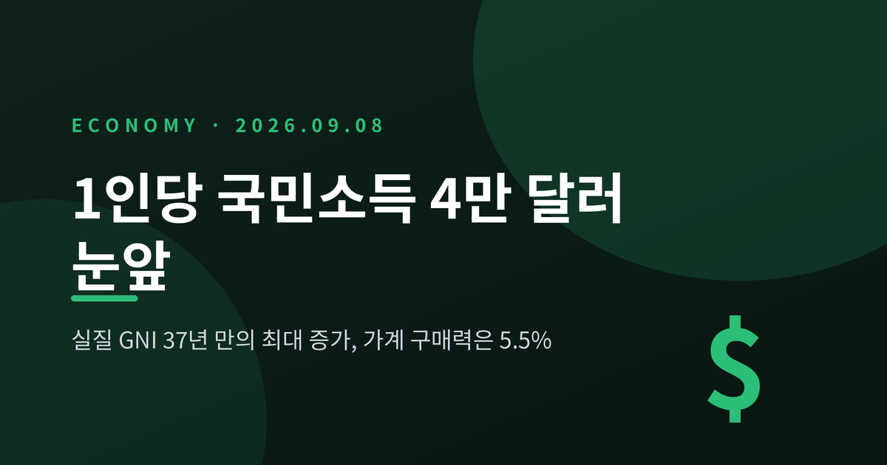
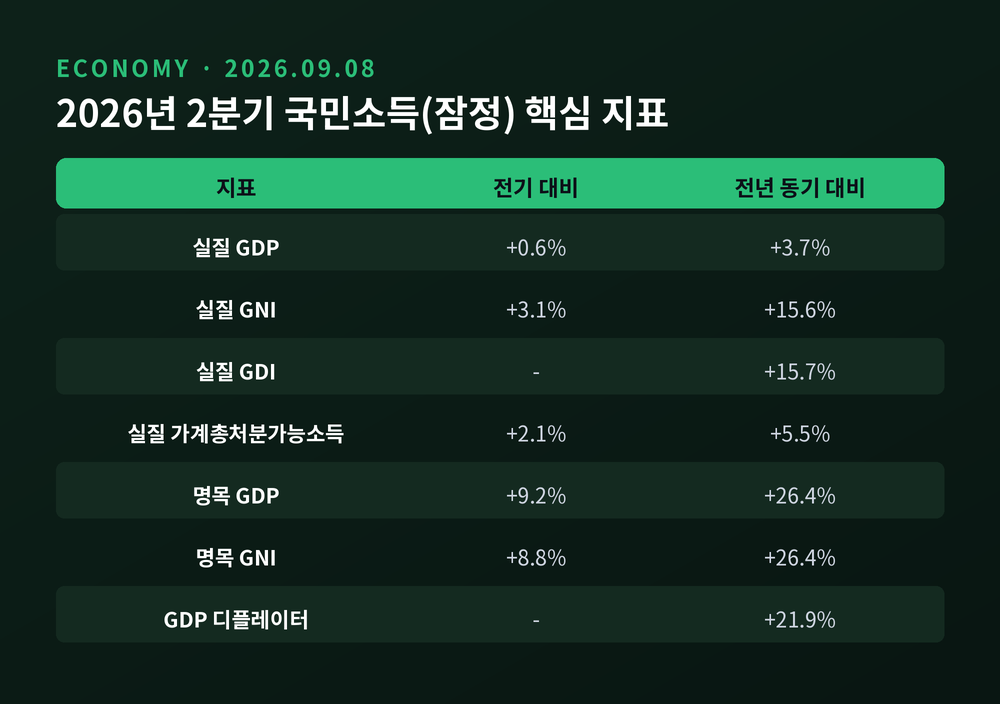
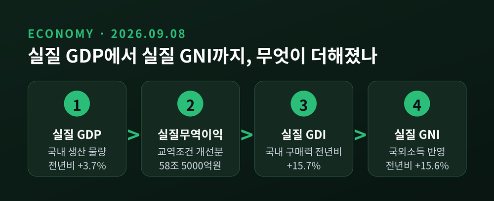
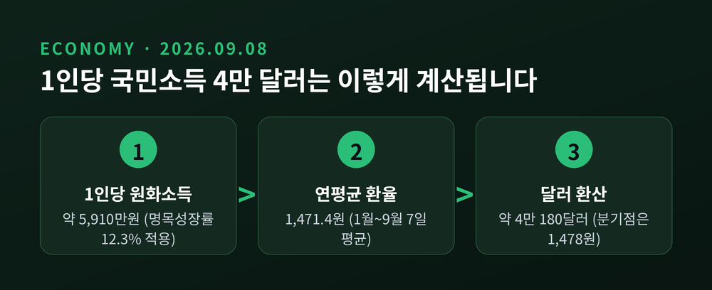
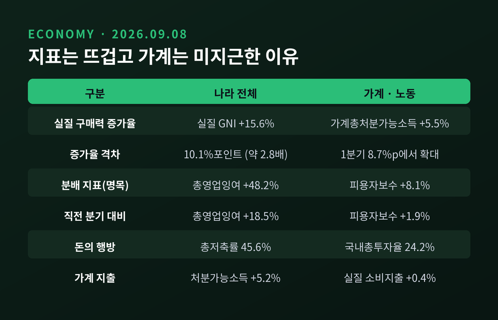
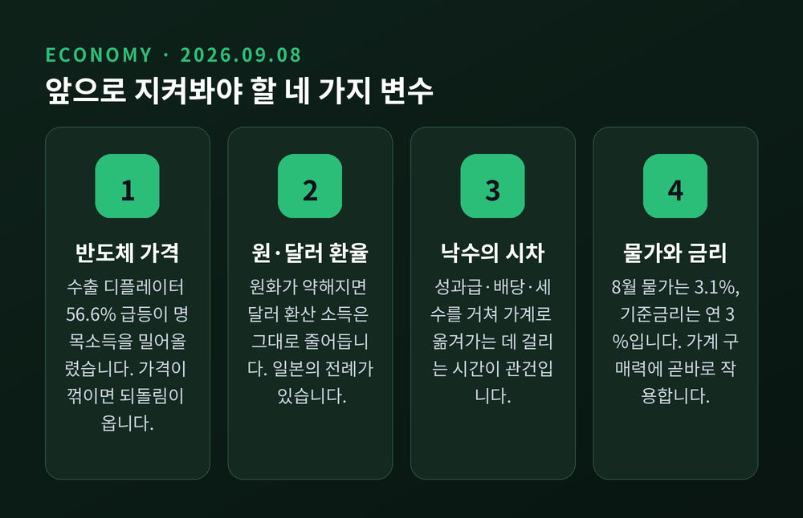

한국은행 「2026년 2분기 국민소득(잠정)」 · 실질 GNI 37년 만의 최대 증가와 가계 구매력 5.5%가 만든 간극

이번 글에서는 9월 8일 한국은행이 내놓은 2026년 2분기 국민소득 통계를 정리해 보겠습니다. 지표는 37년 만의 기록을 세웠는데 정작 살림살이는 그대로라는 말이 나옵니다. 그 간극이 어디서 생기는지 차근차근 따라가 보려 합니다.
세 줄 요약
한국은행은 9월 8일 「2026년 2분기 국민소득(잠정)」을 발표했습니다. 같은 날 김화용 경제통계2국 국민소득부장의 기자설명회도 열렸습니다.
핵심 수치부터 보겠습니다.
2분기 실질 국내총생산(GDP)은 전기 대비 0.6%, 전년 동기 대비 3.7% 늘었습니다. 전기 대비 수치는 앞서 나온 속보치와 같습니다.
실질 국민총소득(GNI)은 전기 대비 3.1%, 전년 동기 대비 15.6% 증가했습니다. 이 15.6%가 이번 발표의 머리기사였습니다. 1988년 4분기(15.7%) 이후 약 37년 만의 최고 증가율입니다.
명목 지표는 더 극적입니다. 2분기 명목 GDP는 834조 9000억 원으로 전년 동기보다 26.4% 늘었습니다. 1979년 3분기(27.7%) 이후 47년 만의 최고치입니다. 명목 GNI 역시 같은 폭인 26.4% 증가했습니다.

같은 분기 통계인데 3.7%와 15.6%로 갈립니다. 이유는 두 지표가 재는 대상이 다르기 때문입니다.
GDP는 국내에서 생산한 상품과 서비스의 물량 변화를 봅니다. 반면 GNI는 여기에 두 가지를 더 얹습니다. 교역조건 변화에 따른 구매력, 그리고 우리 국민이 국외에서 벌어들인 소득입니다.
순서로 정리하면 이렇습니다. 실질 GDP에 교역조건 변화에 따른 실질무역손익을 더하면 실질 국내총소득(GDI)이 됩니다. 여기에 실질 국외순수취요소소득을 반영하면 실질 GNI가 나옵니다.
이번 분기에는 첫 번째 항목이 압도적이었습니다. 교역조건 변화에 따른 실질무역이익이 2분기 58조 5000억 원으로, 1분기 38조 7000억 원보다 19조 8000억 원 늘었습니다.
반대로 실질 국외순수취요소소득은 11조 6000억 원에서 7조 9000억 원으로 줄었습니다. 즉 이번 격차는 해외에서 번 돈이 아니라 거의 전적으로 교역조건이 만든 것입니다.
교역조건이 좋아졌다는 말은 이렇게 풀 수 있습니다. 우리가 파는 물건 값이 우리가 사 오는 물건 값보다 훨씬 크게 올랐다는 뜻입니다. 실제로 2분기 수출 디플레이터는 56.6% 급등한 반면 수입 디플레이터는 21.0% 오르는 데 그쳤습니다. GDP 디플레이터는 21.9% 상승해 1980년 4분기 이후 최고를 기록했습니다.
그 한가운데 반도체가 있습니다. 관세청 기준으로 반도체 수출은 올해 1월 전년 동월 대비 102.5% 늘었고, 6월에는 196.9% 증가한 449억 달러로 월간 기준 처음 400억 달러를 넘었습니다. 1~8월 누적으로는 2800억 달러를 웃돌아 전체 수출의 40% 이상을 차지했습니다.

김화용 부장은 기자설명회에서 조건을 달아 말했습니다. 하반기에 예상치 못한 충격이 없고, 명목 GNI 증가율이 지금 수준을 유지하고, 환율 안정세가 이어진다면 올해 달러 기준 1인당 GNI가 4만 달러를 넘어설 가능성이 매우 높아졌다는 것입니다.
연말까지 넉 달 가까이 남은 시점에 중앙은행이 이렇게 확정적인 표현을 쓴 것은 이례적이라는 평가가 나왔습니다. 실제로 한국은행은 올 3월만 해도 4만 달러 달성 시점을 2028년으로 봤습니다. 6월에 그 이전 가능성을 시사했고, 9월 8일 사실상 올해로 1년 가까이 앞당겼습니다.
계산 구조는 단순합니다. 지난해 명목 GNI에 정부의 올해 명목 GDP 성장률 전망치 12.3%와 추계인구를 적용하면 1인당 GNI는 약 5910만 원입니다. 이 원화 금액을 연평균 원·달러 환율로 나누면 달러 표시 값이 나옵니다. 연평균 환율이 1478원 이하면 4만 달러를 넘습니다.
9월 7일까지의 연평균 환율은 1471.4원이었습니다. 이 수준이 유지되면 약 4만 180달러로 추정됩니다. 아슬아슬한 숫자입니다.
여기서 환율의 무게를 짚고 넘어가야 합니다. 달러 기준 1인당 GNI는 원화 소득을 환율로 환산한 값입니다. 우리 경제의 실질 생산능력이나 원화 소득이 전혀 달라지지 않아도, 환율만 움직이면 4만 달러 달성 여부가 갈립니다.
7월 초 1600원에 육박했던 원·달러 환율은 9월 7일 주간거래 종가 1340.5원까지 내려왔습니다. 2024년 10월 4일 이후 1년 11개월 만의 최저입니다. 9월 8일에는 5.1원 오른 1345.6원에 마감했습니다. 반도체 기업을 비롯한 수출업체의 달러 매도 물량이 원화 강세를 이끌었습니다.
참고할 사례가 있습니다. 일본도 한때 1인당 GNI가 4만 달러를 넘었지만, 성장 정체와 엔화 약세가 겹치며 2024년부터 다시 3만 달러대로 내려왔습니다.

이번 발표의 진짜 쟁점은 여기입니다.
국민경제 전체의 구매력을 보여주는 실질 GNI는 15.6% 늘었습니다. 같은 기간 가계 부문의 구매력을 보여주는 실질 가계총처분가능소득(PGDI)은 5.5% 증가하는 데 그쳤습니다.
두 증가율의 차이는 10.1%포인트입니다. 실질 GNI 증가율이 가계 쪽의 약 2.8배인 셈입니다. 이 격차는 올해 1분기 8.7%포인트에서 2분기 10.1%포인트로 더 벌어졌습니다.
금액으로 보면 2분기 실질 GNI는 666조 8000억 원, 실질 가계총처분가능소득은 341조 2000억 원이었습니다.
다만 한 가지는 분명히 해 두겠습니다. 두 지표는 포괄 범위와 구성이 다릅니다. 한국은행도 PGDI를 "제한적이나마" 가계 구매력을 보여주는 지표로 설명합니다. 단순 비교에는 한계가 있습니다. 그럼에도 증가율을 나란히 놓으면, 나라 전체의 소득과 가계의 소득이 얼마나 다른 속도로 늘고 있는지는 확인할 수 있습니다.
분배 쪽 통계를 보면 그림이 더 선명해집니다.
기업 실적을 반영하는 총영업잉여는 전기 대비 18.5%, 전년 동기 대비 48.2% 급증했습니다. 두 수치 모두 분기 분배국민소득 통계가 공표된 2010년 2분기 이후 최고입니다.
반면 임금 등 노동소득을 나타내는 피용자보수는 전기 대비 1.9% 증가에 머물렀습니다. 통계 공표 이후 가장 낮은 증가율입니다. 전년 동기 대비로는 8.1% 늘었습니다.
물론 이 명목 지표들은 앞서 본 실질 지표와 포괄 범위가 달라, 같은 원인에서 나온 결과라고 단정하기는 어렵습니다. 그래도 방향은 읽힙니다.
돈이 어디에 머물러 있는지도 통계에 남았습니다. 2분기 총저축률은 45.6%로 전분기보다 3.9%포인트 올라 1970년 통계 작성 이후 최고를 기록했습니다. 같은 기간 국내총투자율은 24.2%로 1975년 3분기 이후 최저였습니다. 소득은 급증했는데 소비와 국내 투자가 그 속도를 따라가지 못한 것입니다.
가계 지출 통계도 비슷한 이야기를 합니다. 2분기 가구당 월평균 처분가능소득은 423만 5000원으로 1년 전보다 5.2% 늘었습니다. 그런데 물가를 반영한 실질 소비지출 증가율은 0.4%에 그쳤습니다.
여기에 물가와 금리가 겹칩니다. 8월 소비자물가는 전년 동월 대비 3.1% 올랐습니다. 7월(2.8%)보다 0.3%포인트 확대된 수치이고, 근원물가는 3.4%였습니다. 금융통화위원회는 8월 27일 기준금리를 연 2.75%에서 3.00%로 올렸습니다. 7월 2.50%에서 2.75%로 인상한 데 이은 연속 인상입니다.
애초에 1인당 GNI라는 지표의 성격도 짚어야 합니다. 이 숫자는 기업과 정부, 가계가 벌어들인 소득을 모두 더해 인구수로 나눈 평균값입니다. 일부 수출기업의 이익이 급증하면 전체 국민소득은 크게 늘지만, 가계가 실제 손에 쥐는 임금과 처분가능소득이 같은 폭으로 늘어난다는 보장은 없습니다.
예전에는 수출이 늘면 고용과 임금이 함께 움직인다는 감각이 통했습니다. 지금은 반도체 한 업종의 가격 상승이 나라 전체 지표를 끌어올리는 구조입니다. 반도체가 수출을 견인하는 사이 다른 제조업과 서비스업의 회복은 더딘, 이른바 K자형 성장이 체감 괴리를 키우고 있다는 지적도 나옵니다.

여기서부터는 확정된 사실이 아니라 전망입니다.
첫째, 반도체 가격 사이클입니다. 이번 명목소득 증가에는 수출 디플레이터 56.6% 급등이 크게 작용했습니다. 가격 상승세가 꺾이면 수출과 기업이익, 명목 GNI가 함께 둔화할 수 있습니다. 한국은행은 당분간 미국의 AI 투자가 이어지며 반도체 수요가 공급을 웃돌 것으로 봤습니다. 김화용 부장은 가격이 내려가더라도 "물량 증가세가 유지된다면" 좋은 실적으로 나타날 것이라고 말했습니다.
둘째, 환율입니다. 원화가 다시 약해지면 달러 환산 1인당 GNI는 그대로 줄어듭니다. 해외투자 확대에 따른 달러 수요 증가도 원화 약세 요인이 될 수 있습니다.
셋째, 낙수의 시차입니다. 한국은행은 반도체에서 시작된 이익 증가가 화학제품·운송장비 제조업과 도소매업 등으로 번지고 있다고 평가했습니다. 기업이익이 성과급과 배당, 세수 증가를 거쳐 가계와 정부로 옮겨 가면 시차를 두고 소비와 투자가 늘어날 수 있다는 설명입니다. 다만 실제로 그렇게 이어질지는 아직 확인되지 않았습니다.
넷째, 물가와 통화정책입니다. 3%대 물가와 연속 금리 인상은 가계의 실질 구매력과 이자 부담에 곧바로 작용합니다.
한 가지 더 덧붙이면, 1인당 GNI 4만 달러는 아직 확정된 숫자가 아닙니다. 연간 확정치는 이듬해에 공표됩니다. 지난해 우리나라의 1인당 GNI는 3만 6963달러였고, 2014년 3만 달러대에 올라선 뒤 12년째 그 구간에 머물러 있습니다.

정리하면 이렇습니다.
2분기 통계는 우리 경제가 벌어들인 총액이 크게 늘었다는 사실을 분명히 보여줍니다. 동시에 그 돈이 아직 가계의 지갑까지는 충분히 닿지 않았다는 사실도 같이 보여줍니다. 두 문장은 모순이 아니라 한 장면의 앞뒷면입니다.
— 평균이 올라간 것과 내 몫이 늘어난 것은 다른 이야기입니다.
지표는 지표대로 읽고, 살림은 살림대로 챙기는 수밖에 없습니다. 4만 달러라는 숫자가 체감으로 바뀌는 데 얼마나 걸리겠냐고 물으신다면, 저는 아직 그 답을 갖고 있지 않다고 말씀드리겠습니다. 다만 그 답이 어디서 나올지는 이번 통계가 조용히 가리키고 있습니다.
※ 이 글은 공개된 통계와 언론 보도를 정리한 해설이며, 투자 권유가 아닙니다. 특정 종목이나 자산의 매수·매도를 권하지 않습니다. 투자 판단과 그 결과에 대한 책임은 투자자 본인에게 있습니다.
※ 본문의 수치는 한국은행 「2026년 2분기 국민소득(잠정)」(2026.9.8) 발표 및 관련 보도를 근거로 했습니다. 잠정치는 이후 수정될 수 있습니다.